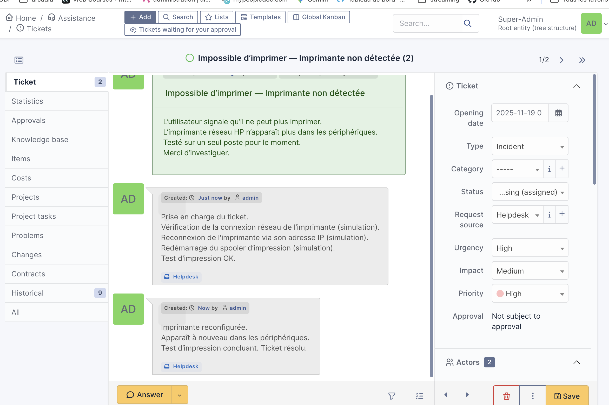
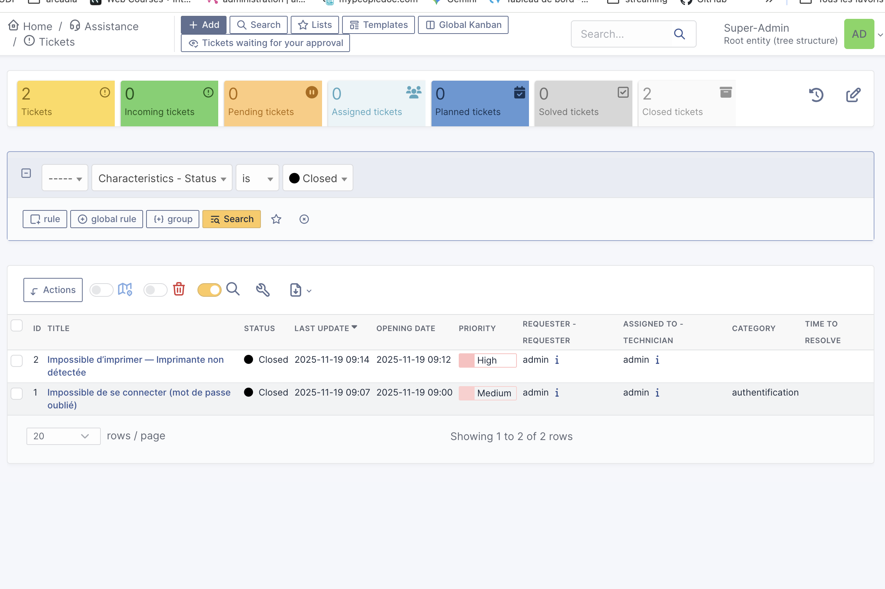
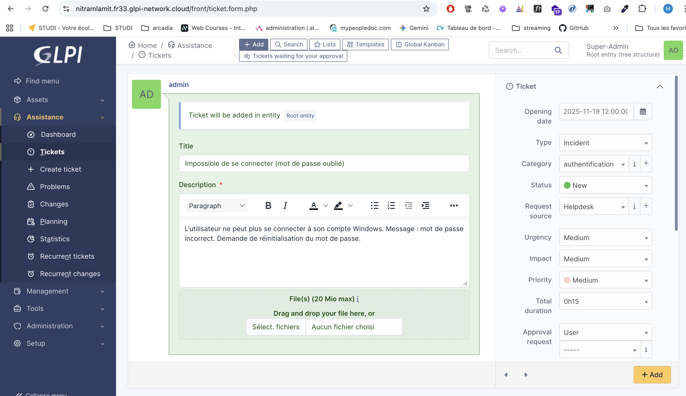
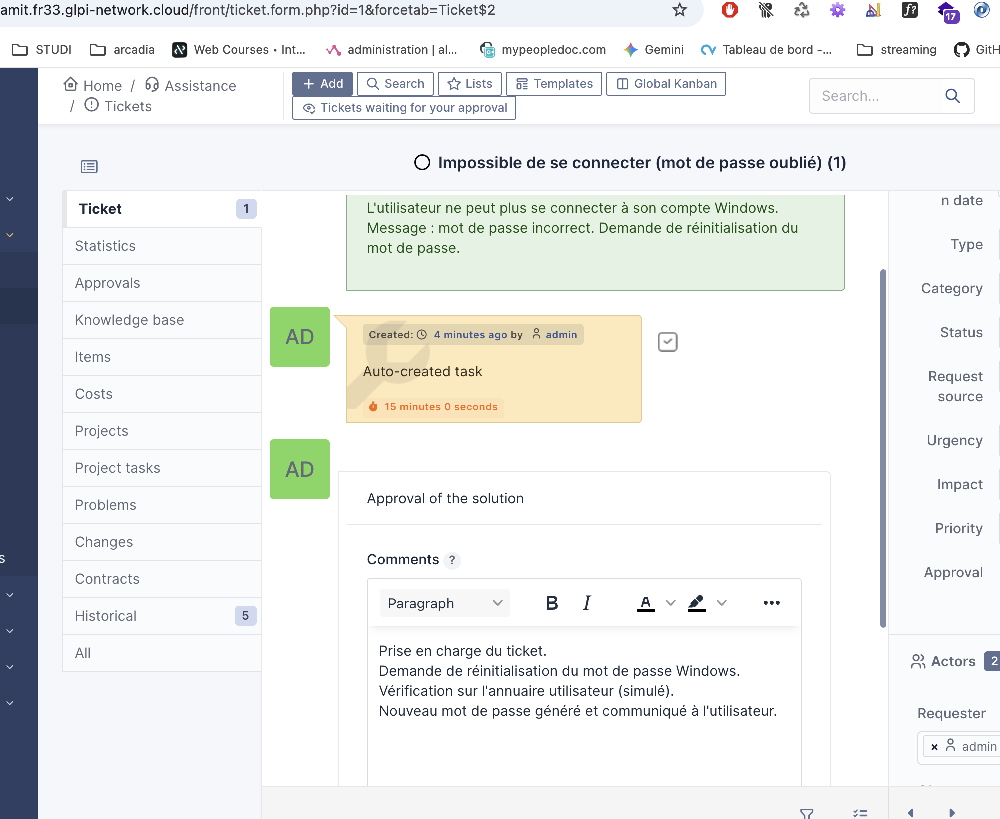
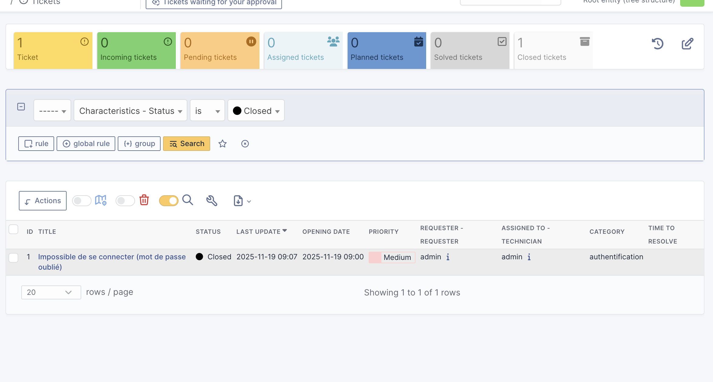
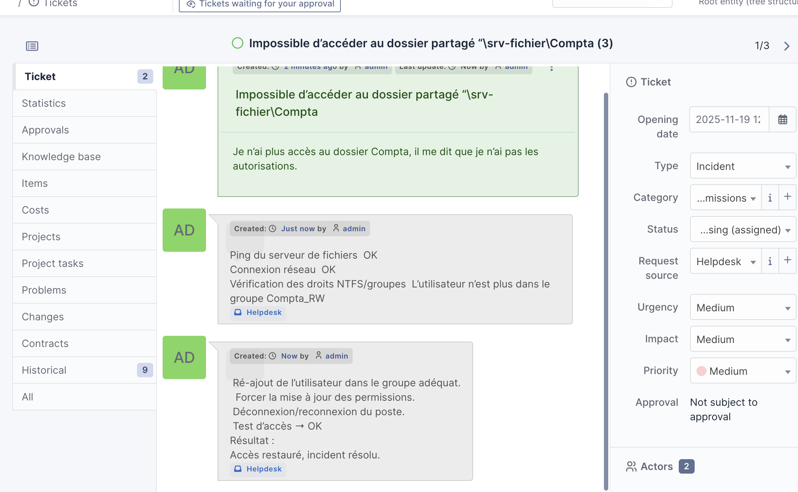

Technicien Support / Helpdesk
Profil motivé avec un BTS Assistant de Gestion et un Graduate Développeur Web Full Stack.
Actuellement en reconversion, je développe mes compétences en support informatique : installation de logiciels, gestion de tickets, accompagnement des utilisateurs et prise en main d’outils techniques. Curieux, investi et prêt à apprendre, je monte rapidement en compétences et cherche à évoluer dans un environnement professionnel.
Me contacterÀ propos de moi
Je m'appelle Martin Lamalle, j'ai 29 ans et je me réoriente vers le support informatique / helpdesk.
Passionné d’informatique, j’ai obtenu un Graduate Web Developer Full Stack où j’ai appris l’installation de logiciels, la configuration d’environnements Windows et macOS, l’utilisation du terminal, Docker, GitHub et l’hébergement simple de sites en local ou en ligne.
Grâce à mes expériences en vente et à mon BTS Assistant de Gestion, je suis à l’aise avec les utilisateurs, organisé et habitué à gérer plusieurs demandes. Je me forme actuellement en autodidacte sur Active Directory et GLPI afin de développer mes compétences en support technique.
Infos rapides
- 🎯 Objectif : Technicien Support / Helpdesk
- 🚗 Permis B & véhicule
- 📍 Basé sur Bordeaux
- 📅 Disponible immédiatement
Compétences techniques
Systèmes & installation
- Windows 10/11 : installation et configuration de base
- Installation et mise à jour de logiciels
- Utilisation de base du terminal (Windows et macOS)
- Configuration simple d’appareils (imprimantes, stockage externe, dock de sauvegarde)
Support & tickets
- GLPI : création et traitement de tickets (cas pratiques simulés)
- Prise en compte de la demande utilisateur
- Suivi des incidents et retour à l’utilisateur
- Rédaction de comptes-rendus simples et clairs
Environnements & web
- HTML, CSS, JavaScript, PHP
- Déploiement et hébergement simple de sites (local et en ligne)
- Utilisation de Docker pour des environnements de développement
- WordPress : apprentissage en cours (hébergement local)
Bureautique & outils
- Suite bureautique : Word, Excel, Outlook, Teams
- Navigateur : gestion du cache, des extensions et des paramètres
- Git & GitHub : versioning de projets et mise en ligne
- Outils de gestion / organisation (ex : Notion)
Matériel
- Branchement et vérification de périphériques (écran, clavier, souris, etc.)
- Installation d’imprimantes et périphériques en réseau domestique
- Mise en place de solutions de sauvegarde locales (disque externe, dock)
En cours d’apprentissage
- Active Directory : création et gestion de comptes (en environnement de test)
- Approfondissement de GLPI pour la gestion d’incidents
Compétences humaines
- Aisance relationnelle et sens du contact (expérience en vente)
- Écoute active et volonté d’aider les utilisateurs
- Organisation et gestion des priorités
- Capacité à travailler sous pression
- Adaptabilité et apprentissage rapide
- Autonomie et curiosité (auto-formation sur de nouveaux outils)
Projets & cas pratiques
1. Gestion d’incidents simulés avec GLPI
J’ai créé plusieurs tickets dans GLPI afin de reproduire des situations courantes rencontrées en support informatique et de m’entraîner aux diagnostics de premier niveau.
📌 Incident 1 — Impossible d’imprimer (imprimante réseau non détectée)
 L’imprimante réseau HP n’apparaît plus dans les périphériques. Intervention réalisée :
- Vérification de la connexion réseau (simulation)
- Reconnexion via l’adresse IP (simulation)
- Redémarrage du spooler d’impression
- Test d’impression concluant
📌 Incident 2 — Mot de passe Windows oublié
  L’utilisateur ne peut plus se connecter à son compte Windows. Intervention réalisée :
- Analyse de la demande
- Réinitialisation du mot de passe (simulation)
- Test de connexion OK
- Clôture du ticket
📌 Incident 3 — Accès impossible à un dossier partagé
L’utilisateur n’a plus accès à un dossier partagé (droits insuffisants). Intervention réalisée :
- Ping du serveur de fichiers → OK
- Connexion réseau → OK
- Vérification des droits NTFS / groupes
- Ajout de l’utilisateur au groupe adéquat
- Actualisation des permissions
- Test d’accès OK — incident résolu
2. Environnement de test Active Directory (en cours)
Mise en place d’un environnement AD en local afin de comprendre la gestion des utilisateurs, des groupes et des permissions :
- Installation de Windows Server sur une machine dédiée
- Configuration du domaine de test (
lab.local) - Création de comptes utilisateurs (en cours)
- Exploration de la gestion des OU et des stratégies
3. Portfolio en ligne (ce site)
- Développement complet du site en HTML/CSS
- Hébergement gratuit via GitHub Pages
- Mise en page responsive et claire
- Mise à jour facile des compétences et projets
Contact
Disponible pour échanger ou répondre à vos questions, n’hésitez pas à me contacter.
- 📧 Email : martinlamalle@gmail.com
- 📞 Téléphone : 07-81-29-79-63
- 🔗 LinkedIn : Mon profil LinkedIn
- 📍 Ville : Bordeaux